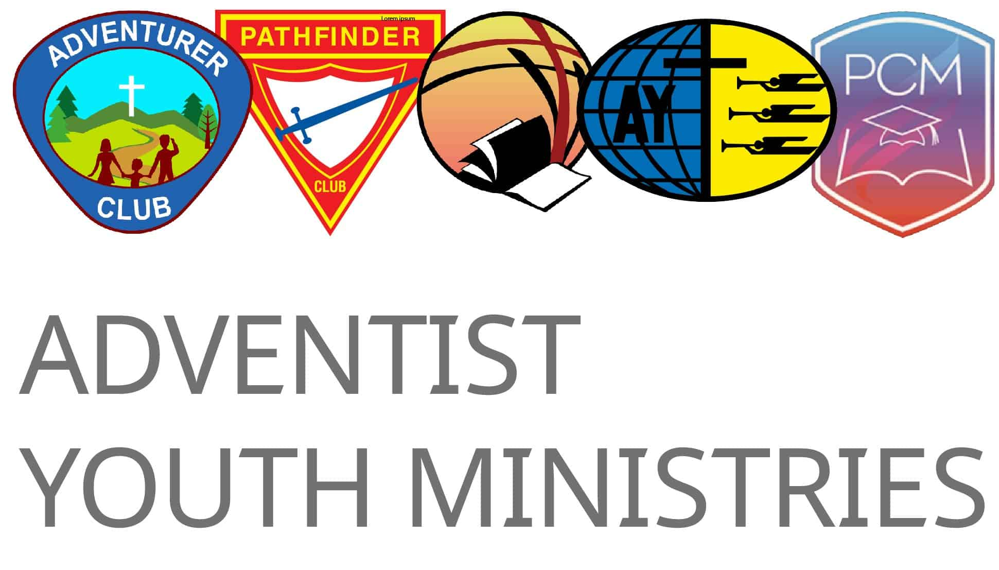

YOUTH MINISTRIES
Cape Conference • Uniform Builder & Specifications • SID 2025

Cape Conference • Uniform Builder & Specifications • SID 2025

The official Pathfinder uniform is a visual statement of identity and belonging to a worldwide movement. Configure your complete Class A uniform below, check requirements, and print a ready-to-shop list — aligned with the SID 2025 Uniforms Booklet.
Select your options above to preview your official uniform
🔍 Hover thumbnails in the list to zoom • Click to see full description
All items sourced from the SID 2025 Uniforms Booklet. Required items are pre-selected. Deselect anything you already own. Click any item thumbnail to see full description & placement guide.
The Pathfinder uniform is worn with pride worldwide. Wearing the uniform provides a consciousness of belonging to a club that rightly represents the Adventist youth of today. Any style or colour deviation must be authorised by the General Conference Youth Ministries Department.
Complete the three steps on the left to see your personalised official uniform checklist with estimated prices.
Honour badges are worn on the sash and can only be issued with approval from your club leader or director. List honours you are requesting below.

3rd Edition – Southern Africa Indian Ocean Division. Full diagrams & specifications.
Open PDF
Official General Conference standards governing all Pathfinder uniforms worldwide.
Open Website
Earlier SID reference booklet – still useful for historical insignia placement context.
Open PDFPurchase from these approved Cape Conference suppliers to ensure SID 2025 compliance.
Official uniforms for Adventurers, Pathfinders, and Master Guides. Online ordering available nationwide.
ay.toc.adventist.orgJohannesburg-based supplier. Full uniform sets, individual items, sashes, and insignia accessories.
WhatsApp: 072 699 0090
Nationwide specialist in custom insignia embroidery, bespoke tailoring, and SDA uniform sets.
Contact your conference office for details
The official uniform for Adventurers, Pathfinders, Master Guides, and Ambassadors as stipulated by the General Conference of Seventh-day Adventist® Youth Ministries Department — adopted for the Southern Africa Indian Ocean Division (SID 2025).
The Pathfinder uniform helps make the Pathfinder program real and visible. It is emblematic and representative of the worldwide club's ideals and standards.
Each individual member becomes a very vital representative of the organization. Wearing the uniform provides a consciousness of belonging to a club that rightly represents the Adventist youth of today. If the uniform is worn as ordinary clothing it will have failed in its purpose.
The uniform should always be neat and clean. To wear it commonly for ordinary play or work lowers its dignity. The Pathfinder Club program should be so valuable to each member that the uniform will be acquired and worn with enthusiasm.
While the uniform of the Pathfinder Club varies in regions or countries around the world, the insignia and where they are placed are well-nigh universally the same. Designing and setting the position of the insignia is the responsibility of the World Pathfinder Director and the General Conference in consultation with the divisions.
"The official uniform for the Adventurer, Pathfinders, Master-Guide, and Ambassador is stipulated by the General Conference of Seventh-day Adventist® Youth Ministries Department. Any deviation or changes, including the uniform's style and color, must first be authorized by the General Conference Youth Ministries Department."— GC Youth Ministries • Official Uniform Policy
Insignia fall into two categories: Identification Insignia (who you belong to) and Recognition/Award Insignia (what you have achieved).
Emblems that signify the organisation to which the person belongs — including the Pathfinder World Emblem, Club Crescent, and Conference/Union patches.
Emblems indicating class achievement, position, or special achievements in conduct or service — including class pins, honour badges, and rank strips.
Clubs, conferences, unions, and divisions may make no exceptions or variations without definite permission from World Pathfinder Headquarters.
Formal occasions & public events
Club meetings & outdoor activities
Click "View Details" on any item to see the full description, placement guide, and usage instructions. Sourced from the SID 2025 Uniforms Booklet and GC specifications.
Correct placement of all insignia is essential. The positions below are standard across all SDA divisions unless specifically authorised otherwise.


Official guidance from the GC Youth Ministries Department on appropriate and inappropriate occasions for wearing the Pathfinder uniform.
Regular club meetings, investiture ceremonies, camporees, and all official Pathfinder club activities.
While engaging in witness activity or community service such as food distribution, Ingathering, literature distribution, and similar outreach.
Pathfinder Sabbath, Adventist Youth programmes, church parades, and conference-level religious gatherings.
Public marches, community parades, and events where the Pathfinder organisation is officially representing the church.
The uniform should never be worn for ordinary play or work. To do so lowers its dignity and defeats its purpose as a sacred representation of the organisation.
The uniform must not be worn when engaged in selling or solicitation for personal profit, or for any commercial or political purposes.
The uniform must not be worn at any time or place where wearing it discounts the organisation, casts reflection upon the uniform, or lowers its dignity and esteem.
Any deviation including style and colour changes must be authorised by the GC Youth Ministries Department. No club, conference, or division may make exceptions without permission.
Download the official specification documents for full diagrams, insignia placement, and size guides.

3rd Edition – Southern Africa Indian Ocean Division. Full diagrams & specifications. Latest edition.
Download PDF
Official General Conference standards governing all Pathfinder, Adventurer, and Master Guide uniforms worldwide.
View Online
Earlier SID reference booklet — useful for historical insignia placement rules and reference context.
Download PDF
Cape Conference Youth Ministry •
ccadventist.org •
Content sourced from GC Youth Ministries
and the SID 2025 Uniforms Booklet
For the official complete specifications, always refer to the source documents above.